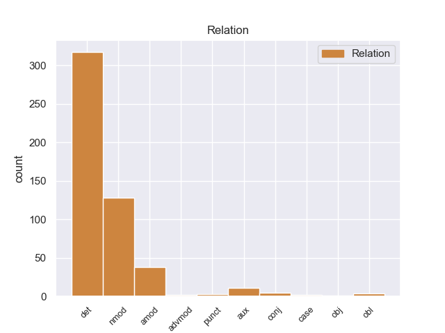
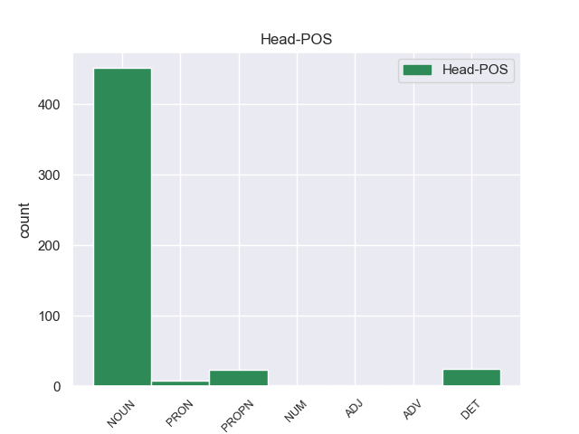
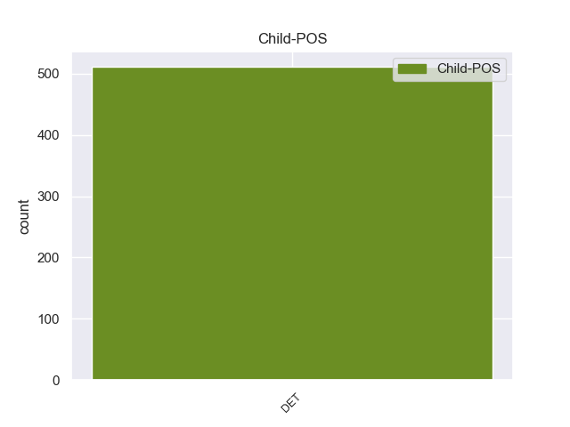

Distribution of features within this leaf



Agreement Rules sorted by frequency.
When the head token is NOUN and the dependent token is DET.
1 Υπ' _ _ _ _ 0 _ _ _
2 αυτές _ _ _ _ 0 _ _ _
3 τις _ _ _ _ 0 _ _ _
4 συνθήκες _ _ _ _ 0 _ _ _
5 , _ _ _ _ 0 _ _ _
6 η _ _ _ _ 0 _ _ _
7 Επιτροπή _ _ _ _ 0 _ _ _
8 Νομικών _ _ _ _ 0 _ _ _
9 Θεμάτων _ _ _ _ 0 _ _ _
10 , _ _ _ _ 0 _ _ _
11 της _ _ _ _ 0 _ _ _
12 οποίας _ _ _ _ 0 _ _ _
13 τη _ _ _ _ 0 _ _ _
14 θέση _ _ _ _ 0 _ _ _
15 αποδέχομαι _ _ _ _ 0 _ _ _
16 πλήρως _ _ _ _ 0 _ _ _
17 , _ _ _ _ 0 _ _ _
18 προτείνει _ _ _ _ 0 _ _ _
19 την _ _ _ _ 0 _ _ _
20 απόρριψη _ _ _ _ 0 _ _ _
21 της _ _ _ _ 0 _ _ _
22 αίτησης _ _ _ _ 0 _ _ _
23 άρσης _ _ _ _ 0 _ _ _
24 της _ _ _ _ 0 _ _ _
25 βουλευτικής _ _ _ _ 0 _ _ _
26 ασυλίας _ _ _ _ 0 _ _ _
27 την _ _ _ _ 0 _ _ _
28 οποία _ _ _ _ 0 _ _ _
29 υπέβαλε _ _ _ _ 0 _ _ _
30 το _ _ _ _ 0 _ _ _
31 γαλλικό _ _ _ _ 0 _ _ _
32 Υπουργείο _ _ _ _ 0 _ _ _
33 Δικαιοσύνης _ _ _ _ 0 _ _ _
34 , _ _ _ _ 0 _ _ _
35 σ _ _ _ _ 0 _ _ _
36 τη _ _ _ _ 0 _ _ _
37 μορφή μορφή DET _ Case=Acc|Gender=Fem|Number=Sing 41 obl _ _
38 υπό _ _ _ _ 0 _ _ _
39 την _ _ _ _ 0 _ _ _
40 οποία _ _ _ _ 0 _ _ _
41 υποβλήθηκε υποβλήθηκε NOUN _ Case=Acc|Gender=Fem|Number=Sing 0 _ _ _
42 σ _ _ _ _ 0 _ _ _
43 το _ _ _ _ 0 _ _ _
44 Κοινοβούλιο _ _ _ _ 0 _ _ _
45 . _ _ _ _ 0 _ _ _
When the head token is NOUN and the dependent token is DET. and the head token is DET and the dependent token is DET.
1 Πρέπει _ _ _ _ 0 _ _ _
2 να _ _ _ _ 0 _ _ _
3 επισημανθεί _ _ _ _ 0 _ _ _
4 ότι _ _ _ _ 0 _ _ _
5 ο _ _ _ _ 0 _ _ _
6 Εισαγγελέας _ _ _ _ 0 _ _ _
7 Πλημμελειοδικών _ _ _ _ 0 _ _ _
8 υποστήριξε _ _ _ _ 0 _ _ _
9 σθεναρά _ _ _ _ 0 _ _ _
10 την _ _ _ _ 0 _ _ _
11 αίτηση _ _ _ _ 0 _ _ _
12 επιβολής _ _ _ _ 0 _ _ _
13 μέτρων _ _ _ _ 0 _ _ _
14 δικαστικής _ _ _ _ 0 _ _ _
15 επιτήρησης _ _ _ _ 0 _ _ _
16 που _ _ _ _ 0 _ _ _
17 υπέβαλαν _ _ _ _ 0 _ _ _
18 οι _ _ _ _ 0 _ _ _
19 ανακριτές _ _ _ _ 0 _ _ _
20 , _ _ _ _ 0 _ _ _
21 υπογραμμίζοντας _ _ _ _ 0 _ _ _
22 τη _ _ _ _ 0 _ _ _
23 σοβαρότητα _ _ _ _ 0 _ _ _
24 και _ _ _ _ 0 _ _ _
25 τη _ _ _ _ 0 _ _ _
26 φύση _ _ _ _ 0 _ _ _
27 της _ _ _ _ 0 _ _ _
28 υπόθεσης _ _ _ _ 0 _ _ _
29 και _ _ _ _ 0 _ _ _
30 χαρακτηρίζοντας _ _ _ _ 0 _ _ _
31 μάλιστα _ _ _ _ 0 _ _ _
32 την _ _ _ _ 0 _ _ _
33 αίτηση ο DET _ Case=Acc|Gender=Fem|Number=Sing 0 _ _ _
34 αυτή _ _ _ _ 0 _ _ _
35 ως _ _ _ _ 0 _ _ _
36 απαραίτητη ο DET _ Case=Acc|Gender=Fem|Number=Sing 33 nmod _ _
37 επί _ _ _ _ 0 _ _ _
38 της _ _ _ _ 0 _ _ _
39 αρχής _ _ _ _ 0 _ _ _
40 . _ _ _ _ 0 _ _ _
When the head token is NOUN and the dependent token is DET. and the head token is DET and the dependent token is DET. and the head token is PROPN and the dependent token is DET.
1 Δεκάδες _ _ _ _ 0 _ _ _
2 χιλιάδες _ _ _ _ 0 _ _ _
3 πολίτες _ _ _ _ 0 _ _ _
4 έμειναν _ _ _ _ 0 _ _ _
5 χωρίς _ _ _ _ 0 _ _ _
6 ηλεκτρικό _ _ _ _ 0 _ _ _
7 ρεύμα _ _ _ _ 0 _ _ _
8 την ο DET DET Case=Acc|Definite=Def|Gender=Fem|Number=Sing|PronType=Art 9 det _ _
9 Τρίτη Τρίτη PROPN PROPN Case=Acc|Gender=Fem|Number=Sing 0 _ _ _
10 , _ _ _ _ 0 _ _ _
11 ενώ _ _ _ _ 0 _ _ _
12 τα _ _ _ _ 0 _ _ _
13 σωστικά _ _ _ _ 0 _ _ _
14 συνεργεία _ _ _ _ 0 _ _ _
15 έδιναν _ _ _ _ 0 _ _ _
16 μάχη _ _ _ _ 0 _ _ _
17 με _ _ _ _ 0 _ _ _
18 τον _ _ _ _ 0 _ _ _
19 χρόνο _ _ _ _ 0 _ _ _
20 για _ _ _ _ 0 _ _ _
21 τη _ _ _ _ 0 _ _ _
22 διάσωση _ _ _ _ 0 _ _ _
23 ανθρώπων _ _ _ _ 0 _ _ _
24 . _ _ _ _ 0 _ _ _
When the head token is NOUN and the dependent token is DET. and the head token is DET and the dependent token is DET. and the head token is PROPN and the dependent token is DET. and the head token is PRON and the dependent token is DET.
1 Υπάρχει _ _ _ _ 0 _ _ _
2 μια _ _ _ _ 0 _ _ _
3 άλλη _ _ _ _ 0 _ _ _
4 πλευρά _ _ _ _ 0 _ _ _
5 της _ _ _ _ 0 _ _ _
6 υπόθεσης _ _ _ _ 0 _ _ _
7 , _ _ _ _ 0 _ _ _
8 η ο DET DET Case=Nom|Definite=Def|Gender=Fem|Number=Sing|PronType=Art 9 det _ _
9 οποία οποίος PRON PRON Case=Nom|Gender=Fem|Number=Sing|Person=3|PronType=Rel 0 _ _ _
10 , _ _ _ _ 0 _ _ _
11 δυστυχώς _ _ _ _ 0 _ _ _
12 , _ _ _ _ 0 _ _ _
13 γεννά _ _ _ _ 0 _ _ _
14 την _ _ _ _ 0 _ _ _
15 υποψία _ _ _ _ 0 _ _ _
16 ότι _ _ _ _ 0 _ _ _
17 η _ _ _ _ 0 _ _ _
18 πρόνοια _ _ _ _ 0 _ _ _
19 σχετικά _ _ _ _ 0 _ _ _
20 με _ _ _ _ 0 _ _ _
21 τις _ _ _ _ 0 _ _ _
22 προϋποθέσεις _ _ _ _ 0 _ _ _
23 ελεύθερης _ _ _ _ 0 _ _ _
24 διεξαγωγής _ _ _ _ 0 _ _ _
25 του _ _ _ _ 0 _ _ _
26 κοινοβουλευτικού _ _ _ _ 0 _ _ _
27 έργου _ _ _ _ 0 _ _ _
28 δεν _ _ _ _ 0 _ _ _
29 απασχόλησε _ _ _ _ 0 _ _ _
30 επαρκώς _ _ _ _ 0 _ _ _
31 την _ _ _ _ 0 _ _ _
32 εισαγγελική _ _ _ _ 0 _ _ _
33 αρχή _ _ _ _ 0 _ _ _
34 : _ _ _ _ 0 _ _ _
When the head token is NOUN and the dependent token is DET. and the head token is DET and the dependent token is DET. and the head token is PROPN and the dependent token is DET. and the head token is PRON and the dependent token is DET. and the head token is ADJ and the dependent token is DET.
1 να _ _ _ _ 0 _ _ _
2 απαιτηθεί _ _ _ _ 0 _ _ _
3 η _ _ _ _ 0 _ _ _
4 απελευθέρωση ο DET _ Case=Acc|Gender=Fem|Number=Sing 11 nmod _ _
5 όλων _ _ _ _ 0 _ _ _
6 των _ _ _ _ 0 _ _ _
7 πολιτικών _ _ _ _ 0 _ _ _
8 κρατουμένων _ _ _ _ 0 _ _ _
9 , _ _ _ _ 0 _ _ _
10 η _ _ _ _ 0 _ _ _
11 αποκατάσταση ο ADJ _ Case=Acc|Gender=Fem|Number=Sing 0 _ _ _
12 της _ _ _ _ 0 _ _ _
13 ελευθερίας _ _ _ _ 0 _ _ _
14 του _ _ _ _ 0 _ _ _
15 Τύπου _ _ _ _ 0 _ _ _
16 , _ _ _ _ 0 _ _ _
17 του _ _ _ _ 0 _ _ _
18 συνεταιρίζεσθαι _ _ _ _ 0 _ _ _
19 , _ _ _ _ 0 _ _ _
20 της _ _ _ _ 0 _ _ _
21 συγκρότησης _ _ _ _ 0 _ _ _
22 οργανώσεων _ _ _ _ 0 _ _ _
23 της _ _ _ _ 0 _ _ _
24 κοινωνίας _ _ _ _ 0 _ _ _
25 των _ _ _ _ 0 _ _ _
26 πολιτών _ _ _ _ 0 _ _ _
27 , _ _ _ _ 0 _ _ _
28 του _ _ _ _ 0 _ _ _
29 σχηματισμού _ _ _ _ 0 _ _ _
30 πολιτικών _ _ _ _ 0 _ _ _
31 κομμάτων _ _ _ _ 0 _ _ _
32 και _ _ _ _ 0 _ _ _
33 συνδικάτων _ _ _ _ 0 _ _ _
34 . _ _ _ _ 0 _ _ _
When the head token is NOUN and the dependent token is DET. and the head token is DET and the dependent token is DET. and the head token is PROPN and the dependent token is DET. and the head token is PRON and the dependent token is DET. and the head token is ADJ and the dependent token is DET. and the head token is NUM and the dependent token is DET.
1 Ο _ _ _ _ 0 _ _ _
2 διάλογος _ _ _ _ 0 _ _ _
3 αυτός _ _ _ _ 0 _ _ _
4 συνεχίστηκε _ _ _ _ 0 _ _ _
5 την ο DET DET Case=Acc|Definite=Def|Gender=Fem|Number=Sing|PronType=Art 6 det _ _
6 1η 1ος NUM NUM Case=Acc|Gender=Fem|Number=Sing|NumType=Ord 0 _ _ _
7 και _ _ _ _ 0 _ _ _
8 2α_Δεκεμβρίου_2001 _ _ _ _ 0 _ _ _
9 με _ _ _ _ 0 _ _ _
10 την _ _ _ _ 0 _ _ _
11 επίσκεψη _ _ _ _ 0 _ _ _
12 της _ _ _ _ 0 _ _ _
13 τρόικας _ _ _ _ 0 _ _ _
14 σ _ _ _ _ 0 _ _ _
15 την _ _ _ _ 0 _ _ _
16 Αβάνα _ _ _ _ 0 _ _ _
17 . _ _ _ _ 0 _ _ _
When the head token is NOUN and the dependent token is DET. and the head token is DET and the dependent token is DET. and the head token is PROPN and the dependent token is DET. and the head token is PRON and the dependent token is DET. and the head token is ADJ and the dependent token is DET. and the head token is NUM and the dependent token is DET. and the head token is ADV and the dependent token is DET.
1 Χθες _ _ _ _ 0 _ _ _
2 , _ _ _ _ 0 _ _ _
3 η _ _ _ _ 0 _ _ _
4 Μάντσεστερ _ _ _ _ 0 _ _ _
5 Γιουνάιτεντ _ _ _ _ 0 _ _ _
6 ηττήθηκε _ _ _ _ 0 _ _ _
7 με _ _ _ _ 0 _ _ _
8 σκορ _ _ _ _ 0 _ _ _
9 2:3 _ _ _ _ 0 _ _ _
10 από _ _ _ _ 0 _ _ _
11 την ο DET _ Case=Acc|Definite=Def|Gender=Fem|Number=Sing|PronType=Art 19 det _ _
12 Ατλέτικο _ _ _ _ 0 _ _ _
13 Μπιλμπάο _ _ _ _ 0 _ _ _
14 , _ _ _ _ 0 _ _ _
15 σ _ _ _ _ 0 _ _ _
16 τα _ _ _ _ 0 _ _ _
17 πλαίσια _ _ _ _ 0 _ _ _
18 της _ _ _ _ 0 _ _ _
19 φάσης φάσης ADV _ Case=Acc|Gender=Fem|Number=Sing 0 _ _ _
20 των _ _ _ _ 0 _ _ _
21 16 _ _ _ _ 0 _ _ _
22 του _ _ _ _ 0 _ _ _
23 Γιουρόπα _ _ _ _ 0 _ _ _
24 Λιγκ _ _ _ _ 0 _ _ _
25 2011-2012 _ _ _ _ 0 _ _ _
26 . _ _ _ _ 0 _ _ _
No disagree examples found.